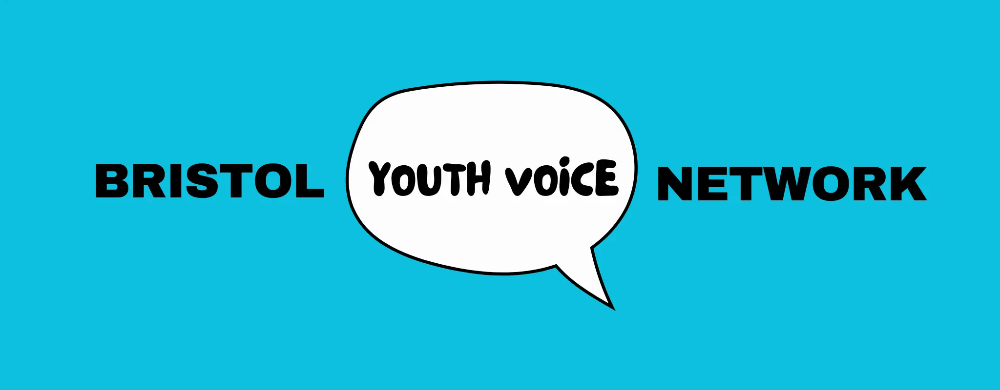
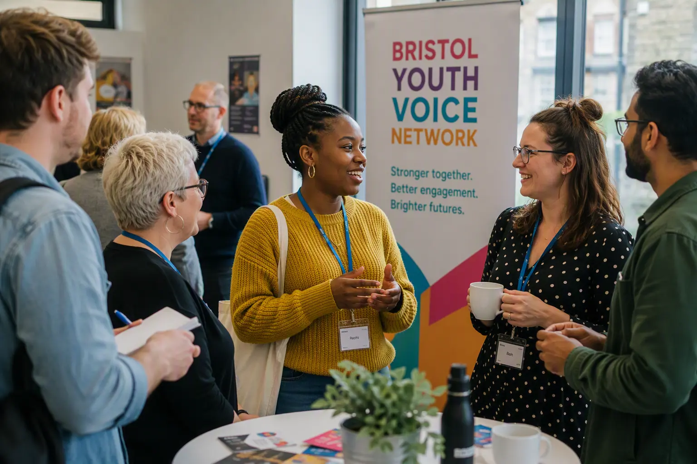

Why
the Network Exists
The Bristol Youth Voice Network brings together organisations and individuals who are passionate about ensuring young people's voices are heard, valued and acted upon. Through collaboration, shared learning and mutual support, we work to strengthen youth participation and influence across Bristol.

One Year On: Bristol Youth Voice Network Continues to Grow
Over the past 12 months, the Bristol Youth Voice Network has continued to grow as a space for collaboration, learning and shared practice around youth voice and participation. The network now includes 113 members from organisations working across youth work, health, education, culture, community development, local government and the voluntary sector.
What We've Been Working On
Over the last year, members have come together to:
- Shape discussions about the future of youth participation in Bristol.
- Share learning, opportunities and resources from across the city.
- Contribute to wider discussions linked to Local Youth Transformation and participation infrastructure.
- Explore ideas for strengthening connections between youth-led groups and organisations.
- Develop new opportunities for collaboration across sectors.
- Support events focused on participation, youth leadership and co-production.
One of the highlights of the year was the Amplifying Youth Voice Across Bristol event, which brought together practitioners from across the city to share learning, showcase practice and explore how we can collectively strengthen youth voice.
Looking Ahead
As the network continues to grow, our focus remains on creating opportunities for organisations to connect, learn from one another and work together to ensure that young people's voices help shape services, opportunities and decisions that affect their lives.
Thank you to everyone who has contributed to the network's development so far. We look forward to welcoming even more organisations and practitioners over the coming year.
Building Connections Across Bristol
One of the most encouraging aspects of the network's growth has been the increasing diversity of members involved. The network now brings together people working in a wide range of settings, creating opportunities for new partnerships and helping youth voice influence discussions beyond traditional youth work settings.
These connections are helping to embed participation across services and create more opportunities for young people to influence decisions that affect their lives.
Looking Ahead
As the network continues to grow, we will focus on creating more opportunities for members to connect, share practice and collaborate on issues that matter to young people across Bristol.
Thank you to everyone who has contributed their time, ideas and energy over the past year. Together we are building a stronger, more connected youth participation community across the city.
Get Involved

Membership provides an opportunity to connect with others working across the youth, community, voluntary and public sectors, share learning and stay informed about developments relevant to children and young people's participation.